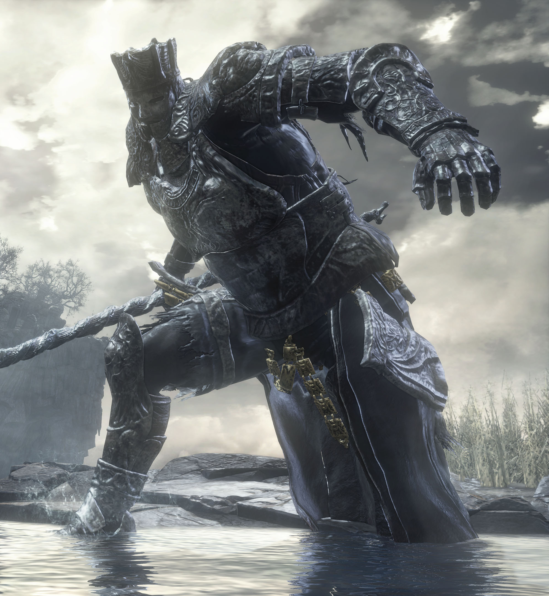
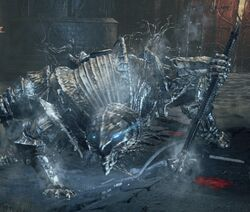

Mi aventura en Dark souls 3
Iudex Gundyr
Iudex Gundyr lleva una armadura plateada de cuerpo entero. Además de eso porta una alabarda de unos seis metros de longitud, con la que atacará al jugador, después de que éste le saque la espada que tiene incrustada en el pecho.
En la segunda fase del combate, una criatura oscura surgirá de la parte superior de su cuerpo, impidiendo que se le vea la cabeza a Gundyr. Esta criatura dotará al guerrero con una gran garra oscura, proveniente de la misma criatura.
Lore
En algún momento un campeon, parece ser que Gundyr llegó tarde al Santuario de Enlace, y fue recibido por un santuario sin fuego y una campana que no tañía. Gundyr fue derrotado por un querrero desconocido, convirtiéndose en una vaina de la espada en espiral con la esperanza de que algún día, la primera llama sería enlazada una vez más. De esta forma, Gundyr se convirtió en juez, esperando la llegada de la ceniza elegida a la cual entregar la Espada en espiral.

Vordt
Vordt es una especie de caballero enorme bestial, que lleva una armadura de cuerpo entero y se mueve "a cuatro patas".
Como arma usa una maza congelante que está ajustada a su gran tamaño.
Lore
Vordt fue un Caballero Percursor del Valle Boreal que sirvió al Pontífice Sulyvahn, además de ser uno de los muchos caballeros en recibir el Ojo izquierdo del Pontífice, un anillo embrujado que transformaba lentamente a su portador en una bestia. Vordt sirvió al Pontífice junto a la Bailarina del Valle Boreal hasta su transformación.

https://www.instagram.com/dark_souls_3.tarea/
https://darksouls.fandom.com/es/wiki/Dark_Souls_III